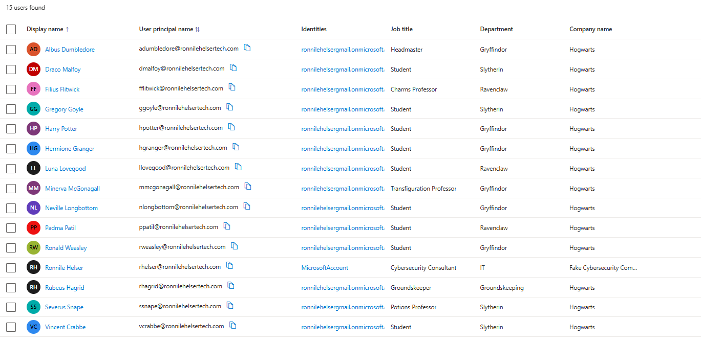
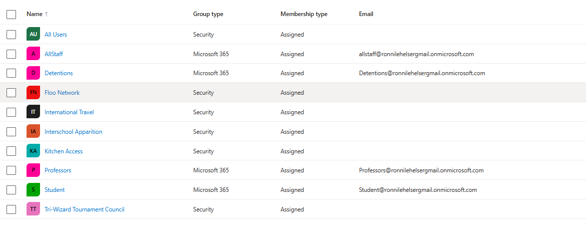
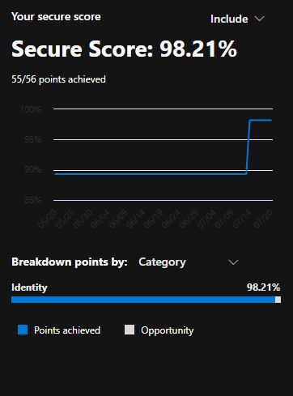
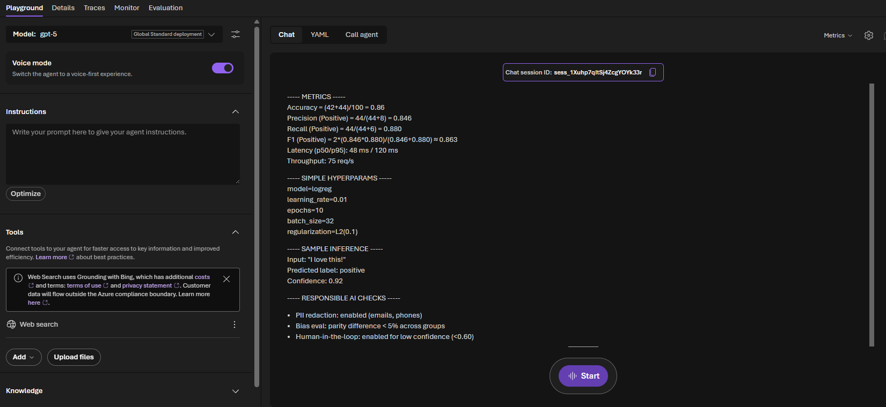
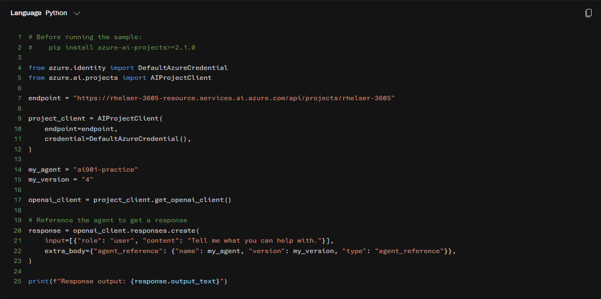

Azure Tenant Configuration
A personal Microsoft 365 / Azure tenant built from scratch: custom domain, a full identity structure in Entra ID, hardened security posture, and an AI agent built and called through Microsoft Foundry — hands-on practice with the same platform covered on my AI-901 exam.
What I Built
I stood up a personal Azure tenant on a custom domain and used it as a live environment for practicing cloud identity administration rather than working through screenshots in a course. That meant creating real users with real attributes, structuring them into groups that reflect actual access-control patterns, and holding myself to the same security posture I'd expect to maintain in a production tenant.
Rather than populate the tenant with generic "Test User 1" accounts, I built out a full Hogwarts-themed identity roster — staff, students, and my own account among them — each with a real job title, department, and company name. It's a deliberate choice: memorable test data makes it obvious at a glance whether a role assignment or group membership is behaving the way I intended, which is harder to judge when every account is named the same generic thing.
Identity roster in Entra ID

Entra ID UsersPlace your image at images/azure-tenant/entra-users.pngEntra ID · Users — 14 accounts across staff and student roles, each carrying a job title, department, and company name.
Every account has a distinct department (Gryffindor, Slytherin, Ravenclaw, Groundskeeping, IT) and job title (Headmaster, Professor, Student, Groundskeeper), which lets me test department- and title-based conditional access or dynamic group rules against data that actually varies, instead of a flat list of identical placeholder users. My own account sits in the list as well, provisioned with a MicrosoftAccount identity rather than the tenant's own directory, which is how a personal account looks when it's invited into a tenant rather than created natively in it, a distinction worth being able to recognize when reviewing a real directory.
Group structure

Entra ID GroupsPlace your image at images/azure-tenant/entra-groups.pngEntra ID · Groups — a mix of Security and Microsoft 365 group types, each standing in for a real access-control scenario.
I built out ten groups split across both group types Entra supports: Microsoft 365 groups for the collaborative, everyone-in-a-role cases (Professors, Student, AllStaff, Detentions), and Security groups for narrower, permission-style access (Kitchen Access, International Travel, Interschool Apparition, Floo Network, Tri-Wizard Tournament Council). That split matters in a real tenant: M365 groups come with a shared mailbox and calendar, while Security groups are the right tool when the only thing you need is a permission boundary. Structuring both types side by side let me practice deciding which one fits a given access scenario instead of defaulting to one for everything.
Security posture

Secure ScorePlace your image at images/azure-tenant/secure-score.pngMicrosoft Defender · Secure Score — 98.21%, 55 of 56 points, entirely within the Identity category.
I used Microsoft Defender's Secure Score as a running scorecard while hardening the tenant, and the trend line shows the real work: a jump from roughly 90% up to 98.21% as I worked through Identity recommendations, things like enforcing MFA, tightening sign-in risk policies, and closing default-configuration gaps that Microsoft flags out of the box. Getting a tenant to a high score isn't a one-time toggle, it's going recommendation by recommendation and understanding what each one actually changes about the tenant's exposure before applying it.
Building an AI agent in Microsoft Foundry

Foundry PlaygroundPlace your image at images/azure-tenant/foundry-agent-playground.pngMicrosoft Foundry · Agent Playground — a GPT-5-backed agent configured with tools, voice mode, and a live test session.
Past standing up the identity side, I used this tenant to build and test an actual agent in Microsoft Foundry, the platform covered on my AI-901 exam. The Playground shows the agent wired to a GPT-5 Global Standard deployment, with Voice mode enabled for a voice-first experience and Web Search grounded through Bing as a connected tool. I ran a live test session that had the agent produce a structured breakdown of classification metrics — accuracy, precision, recall, and F1, alongside sample hyperparameters, a sample inference, and a set of responsible AI checks (PII redaction, bias evaluation, and a human-in-the-loop threshold for low-confidence predictions). That last part matters as much as the model output: configuring an agent responsibly means deciding up front what it's allowed to do with sensitive data and when it has to defer to a person, not bolting that on afterward.

Foundry SDKPlace your image at images/azure-tenant/foundry-agent-sdk.png'">Calling the agent outside the Playground with the azure-ai-projects Python SDK.
Building an agent in a chat UI is one thing; calling it from code is what makes it usable in an actual application. I used the azure-ai-projects SDK with DefaultAzureCredential to authenticate against my Foundry project endpoint, then referenced the agent I'd built (ai901-practice) by name and version rather than hardcoding the model directly, which is the pattern Foundry expects so an agent's configuration can be iterated on independently of the code that calls it. This is the piece that ties the whole project together: the identity and security work in Entra gives the tenant a real foundation, and the Foundry agent shows I can build on top of that foundation, not just administer it.
What I Learned
The identity side reinforced something that's easy to gloss over when reading about Entra rather than configuring it: groups aren't interchangeable, and choosing the wrong type costs you real functionality later. Deciding between a Security group and a Microsoft 365 group for each of my ten groups forced me to actually think through what each one needed, a shared mailbox versus a pure access boundary, instead of defaulting to whichever type I created first.
The Secure Score work taught me that tenant hardening is iterative and explainable, not a single switch. Each recommendation Defender surfaces maps to a specific, nameable risk, and closing the gap from roughly 90% to 98.21% meant understanding each one well enough to defend the change, not just clicking "fix."
Foundry was the newest territory. Building an agent in the Playground is approachable, but the responsible AI configuration, PII redaction, bias evaluation, human-in-the-loop thresholds, is where the platform expects real judgment calls, not defaults. Pairing that with the SDK call showed me the full lifecycle: design and test an agent visually, then integrate it the way a real application would.
Challenges & Pivots
Getting the Foundry SDK sample running took more than copying the code. Authenticating with DefaultAzureCredential outside of an interactive Azure CLI session required making sure my local credential chain actually resolved against the right tenant, and I had to reference the agent by its exact name and version rather than assuming the SDK would pick up the "latest" version automatically. Small detail, but it's the kind of thing that only shows up once you try to call an agent from code instead of clicking it in a browser.
On the identity side, the temptation with a personal tenant is to under-build it, a handful of users, one group, done. Committing to a full themed roster with real departments and a real group taxonomy took longer, but it's the difference between a tenant that looks configured and one that's actually exercised the parts of Entra I'll need to know for production work.